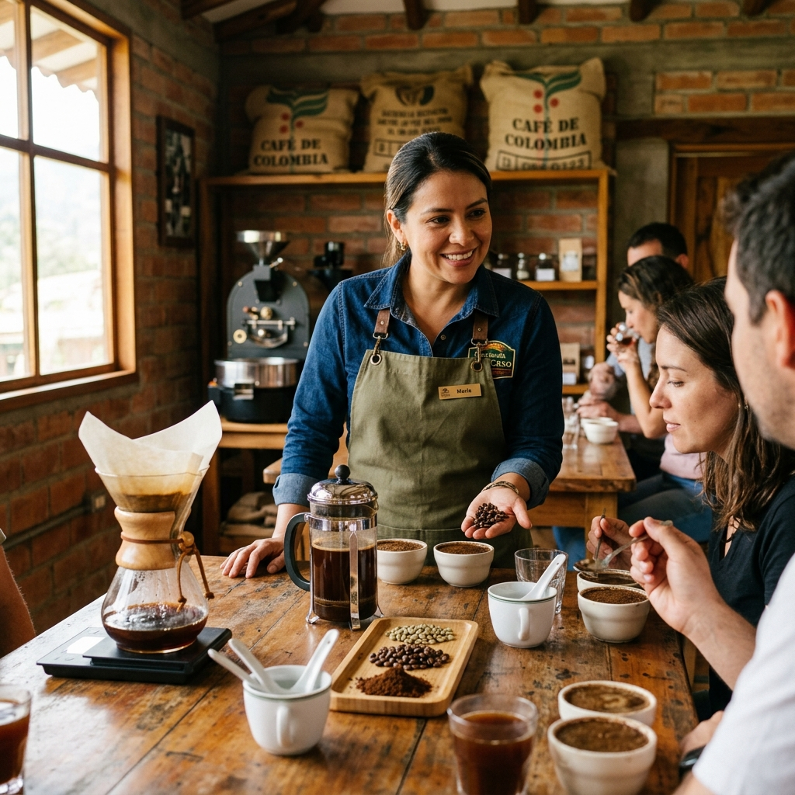
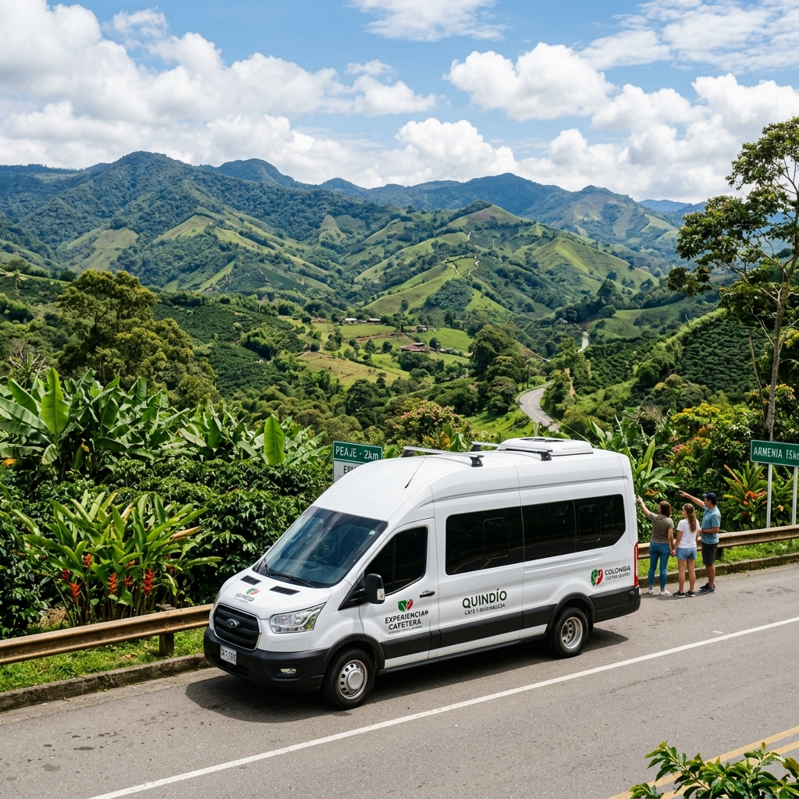
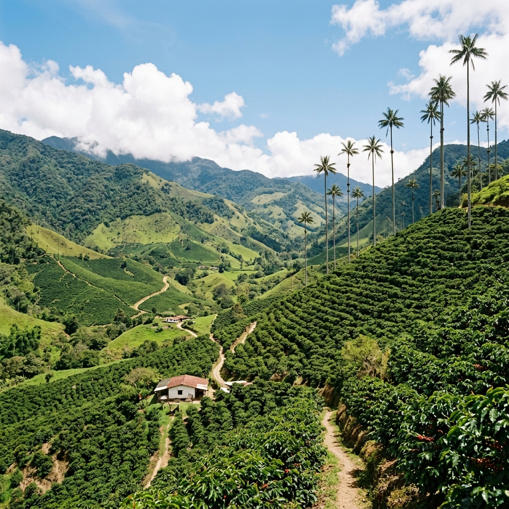

Tour al Parque del Café: Ruta Enamórate del Café
Excursión premium desde Armenia. Vive la cultura y tradición del Eje Cafetero con transporte de ida y vuelta desde tu hotel, pasaporte múltiple, almuerzo típico y seguro médico de asistencia incluidos.
Reservar o Cotizar Tour
Completa tus datos para asegurar tus cupos. Te contactaremos en minutos para coordinar la recogida.
Traslado desde Armenia
Te recogemos y retornamos directamente en tu hotel o alojamiento en Armenia.
Soporte en Ruta 24/7
Asistencia y monitoreo logístico en tiempo real durante todo tu recorrido.
Operador RNT Legal
Garantía de viaje seguro con operador local legalmente registrado bajo RNT N° 44180.
Almuerzo y Menú Flexible
Almuerzo regional tradicional completo incluido con opciones adaptadas a dietas especiales.
Descubre el Corazón del Eje Cafetero
El tour al Parque del Café no es una excursión guiada. A los pasajeros se les indica qué actividades encuentran en el parque; en algunas estaciones (como la entrada, el museo, la sala sensorial, el sendero, el show del café y el show del arte del café) se encuentran intérpretes del parque para brindarles orientación. Los pasajeros son autónomos para manejar su tiempo y decidir qué actividades desean realizar.
El Eje Cafetero, orgullo de Colombia y Patrimonio de la Humanidad por la UNESCO, representa un territorio que conecta con la naturaleza y la tradición. Sus majestuosas montañas y cafetales infinitos albergan una biodiversidad caficultora de gran relevancia para el desarrollo económico del país [Fuente: Federación Nacional de Cafeteros de Colombia].
Este recorrido te permitirá disfrutar de uno de los principales parques temáticos de Colombia: el Parque del Café, ubicado en Montenegro, Quindío. Allí vivirás una experiencia que combina diversión, cultura y tradición cafetera a través de más de 35 atracciones mecánicas y culturales, espectáculos, senderos, miradores y espacios dedicados a exaltar la historia y la importancia del café colombiano dentro del Paisaje Cultural Cafetero, declarado Patrimonio Mundial por la UNESCO.
Estándar regulado por la Ley de Turismo 1558 de 2012
Itinerario del Recorrido
Cronograma optimizado para disfrutar de la Ruta Enamórate del Café y el parque sin afanes.
Recogida en Armenia y Traslado
Comenzamos la jornada con el pick-up directo en tu hotel en Armenia. Viajamos en transporte compartido climatizado hacia Montenegro, Quindío, donde se encuentra el Parque del Café, disfrutando de paisajes de cafetales declarados Patrimonio de la Humanidad por la UNESCO.

Museo Interactivo y Experiencia Sensorial
Iniciamos la 'Ruta Enamórate del Café'. Recorrerás las salas del Museo Interactivo del Café para conocer el origen y la historia del grano en Colombia. Luego, participaremos en una cata guiada en la Sala de Experiencia Sensorial para aprender a reconocer aromas, sabores y atributos de un café de alta calidad.
Métodos de Preparación y Sendero del Café
Conoce los métodos alternativos de preparación (Prensa Francesa, V60, Chemex) en la tienda de café y recorre el sendero biológico entre cafetales para observar de primera mano las etapas de producción: cultivo, cosecha, despulpado, fermentación y secado.

Almuerzo Tradicional de la Región
Disfruta de un almuerzo típico de arrieros en restaurantes autorizados dentro del Parque del Café. El menú incluye plato fuerte tradicional, postre de la región y opciones vegetarianas que puedes programar previamente.
5 Restaurantes donde canjear el bono:
Restaurante Comida Rápida Mall Orquídeas
Parrilla del Parque Mall Orquídeas
Parrilla del Parque Caballerizas
Restaurante El Guadual plaza principal
Subway plaza principal

Show del Café y Show El Arte del Café
Asiste a los dos shows principales. El Show del Café es un montaje de clase mundial con danza, teatro y acrobacia que relata la historia de la caficultura colombiana. El Show El Arte del Café fusiona el barismo profesional con las artes escénicas.

Retorno Seguro a tu Hotel en Armenia
Regreso cómodo a Armenia en nuestro transporte compartido climatizado. Te dejaremos directamente en el lobby de tu hotel, finalizando la actividad con cobertura médica de asistencia activa y la tranquilidad de un servicio formal.

Detalle de Inclusiones del Servicio
Transparencia absoluta sobre lo que cubre tu pasaporte de viaje.
Servicios Incluidos
- Transporte Compartido: Ida y vuelta desde hoteles o alojamientos en el casco urbano de Armenia.
- Pasaporte Múltiple: Entrada al parque con acceso a las atracciones mecánicas y culturales (no incluye paseo a caballo).
- Museo y Cata: Recorrido por el Museo Interactivo del Café y la Sala de Experiencia Sensorial (cata guiada).
- Shows Especiales: Entradas reservadas para el Show del Café y el Show El Arte del Café.
- Almuerzo Incluido: Almuerzo típico tradicional dentro del parque con opciones vegetarianas.
- Seguro de Asistencia: Tarjeta de asistencia médica local activa durante todo el itinerario.
No Incluye
- Gastos personales o compras de café para llevar en las tiendas oficiales del parque.
- Paseo a caballo en el parque (se paga directamente en la estación).
- Propinas voluntarias para conductores o baristas.
- Servicios adicionales de alimentación o bebidas no especificados en el almuerzo.
Calculadora de Tarifas
Selecciona el número de personas para calcular el precio final en dólares (USD).
Resumen de tu Reserva
Transporte + Entrada + Almuerzo + Shows
Total de la Reserva:
Cancelación gratuita hasta 24 horas antes
Opiniones de Nuestros Viajeros
Pasajeros reales que han vivido la Ruta Enamórate del Café con nuestra logística local.
"La recogida en Armenia fue súper puntual. La cata guiada nos abrió los ojos a lo que es un verdadero café especial colombiano. El almuerzo estuvo delicioso y los shows son espectaculares. Súper recomendado."

"We booked this tour as a group of 6. The private transport was extremely comfortable and the group pricing saved us a lot. The barista show was very entertaining. Professional service all around!"

"Excelente logística. Nos recogieron en el hotel de Armenia y no tuvimos que hacer filas en el parque. El sendero del café es hermoso y el Show del Café tiene una calidad artística impresionante. Imperdible."

Preguntas Frecuentes del Tour
Resolvemos tus inquietudes operativas sobre el Tour al Parque del Café.
¿A qué hora inicia la recogida en Armenia y cuánto dura el traslado?
La recogida se realiza en el hotel seleccionado en Armenia entre las 8:00 AM y las 8:30 AM [Fuente: Operaciones Transfers & Tours]. El traslado hasta el Parque del Café en Montenegro dura aproximadamente 35 a 45 minutos dependiendo del estado de la vía.
¿Qué atractivos incluye exactamente la Ruta Enamórate del Café?
Incluye el ingreso preferencial al Parque del Café, el Museo Interactivo del Café, la Sala de Experiencia Sensorial con cata guiada, la Tienda de Métodos Alternativos, el Sendero del Café con su proceso y las entradas para el Show del Café y el Show El Arte del Café [Fuente: Parque del Café Oficial].
¿Cómo funciona la política de precios de la calculadora?
La tarifa se cotiza por persona en dólares americanos (USD) e incluye transporte compartido, almuerzo y entradas. Grupos de 2 a 4 pasajeros pagan la tarifa estándar de $66 USD por persona; grupos de 5 a 10 pasajeros acceden a una tarifa grupal de $60 USD por persona (9% de ahorro) [Fuente: Tarifas Operativas de Transfers & Tours].
¿Es apto el recorrido para niños y adultos mayores?
Totalmente. El sendero del café cuenta con senderos firmes de adoquín y barandas de seguridad. Las salas del museo, shows y restaurantes están climatizados y son accesibles. Se recomienda llevar ropa cómoda, calzado deportivo e hidratación constante debido al clima templado húmedo de Montenegro [Fuente: Federación Nacional de Cafeteros de Colombia].